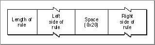

Rule-Based Format
In the rule-based version of the transliteration resource, the header is followed immediately by a 2-byte field containing a count of the number of rules in the resource; the rules immediately follow the count field and constitute the remainder of the resource. This is the definition of the rule-based resource header:TYPE RuleBasedTrslRecord = RECORD sourceType: Integer; {target type for left side of rule} targetType: Integer; {target type for right side of rule} formatNumber: Integer; {format of this resource} propertyFlag: Integer; {transliteration property flags} numberOfRules: Integer; {number of rules that follow} END;Figure B-19 shows the format of a rule.Figure B-19 Format of a transliteration rule

Some rules in some versions of the transliteration resource incorporate a look-ahead feature, in which a particular source pattern is converted to its target pattern only if it is followed by other specific characters. For example, if "[" represents the look-ahead symbol, the characters preceding it in the left side of the rule are converted to the right side of the rule only if the characters following "[" in the left side of the rule match the subsequent characters in the input string.
- The length of the rule is a byte that specifies the actual number of bytes in the rule, excluding the length byte itself.
- The left side of the rule contains the source pattern, a sequence of one or more character codes that the
TransliterateTextfunction compares to the source string. If it finds a match, it returns the right side of the rule (the target pattern). The rules are organized to implement the longest match algorithm, meaning that the longest source pattern that matches a particular target pattern is the one that is converted. For instance, the rule
abb-->hellotakes precedence over the rule
ab-->helloIf these are the matching rules:
Left side Rignt side a[bc A b B c C d[ef D f F Then if we have the input string
abcdfthe output string will be:ABCdFbecause, in the input string, the characters "bc" follow "a", but the characters "ef" do not follow "d".